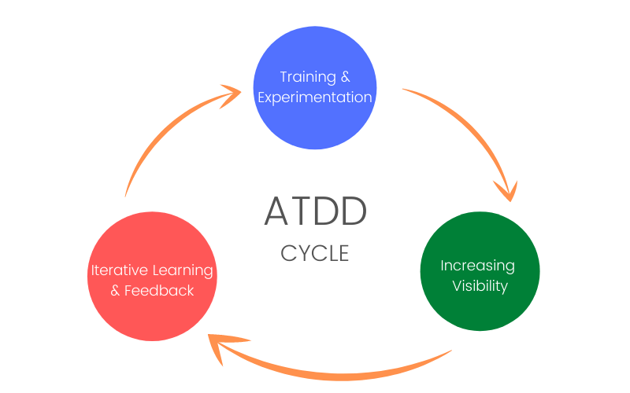

Aktsepteerimistestipõhine arendus (ATDD) on koostööprotsess, kus arendajad, testijad ja ettevõtete esindajad tulevad kokku, et välja töötada nõuded, tajuda võimalikke lõkse ja vähendada vigade tekkimise võimalust enne kodeerimise algust. ATDD on kirjutatud kasutaja vaatenurgast ja vastab küsimusele "Kas kood teeb seda, mida ta peaks tegema?"
ATDD esimene samm on koondada kõik asjaosalised ja pidada spetsifikatsiooni töötuba. Kui nõuded on töökojas määratletud ja selgitatud, saavad testijad koostada määratud kriteeriumide alusel automatiseeritud teste. Kvaliteeditagamise (QA) testijad töötavad koos arendajatega, et rakendada esimene test ja seda automatiseerida. ATDD muudab ka ühikutestimise hõlpsamini rakendatavaks.
ATDD toob kõik arendusega seotud osalejad kokku, et arutada kriteeriume, mille alusel rakendus on üles ehitatud. Nõuete selgus aitab vähendada raisatud jõupingutusi ja arusaamine, kuidas ettevõte eeldab, et asjad toimivad, võib vähendada ümberkodeerimist ja vigu. ATDD võib sageli olla kasulik arendajatele, kes kasutavad Agile'i.
Isegi juhtudel, kui testimine ei ole automatiseeritud või testijatel on vähe teadmisi kodeerimisest, on äritingimuste ja loogika selgitamisel siiski väärtus. Kõik meeskonnad saavad kasu koostööst äriekspertidega ja varajasest arutelust selle üle, kuidas testida, et vajalikud nõuded oleksid täidetud. ATDD lõpptulemus on parem ja usaldusväärsem rakendus.
